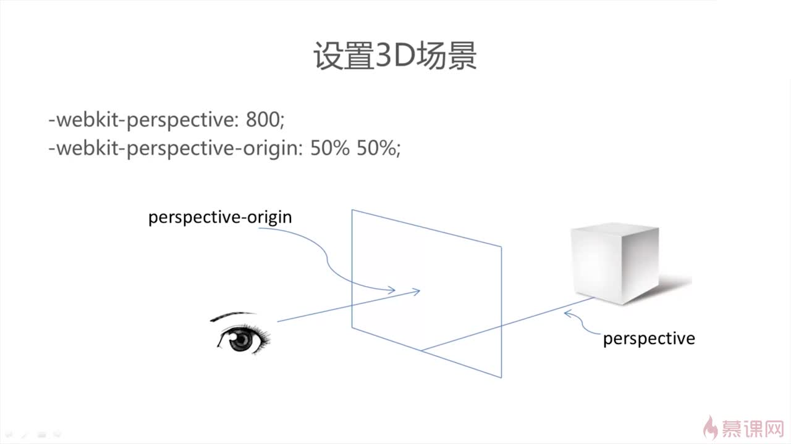
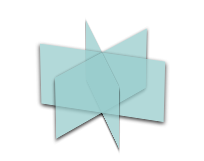
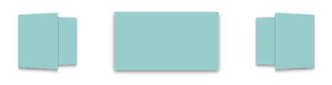

前言
css3动画效果的强大不言而喻，自它出现一直热度不减，它与js动画的优劣也一直成为前端界争论的话题，不可置疑的是css3动画的出现在一定程度上降低了动画效果的实现难度，利于前端的学习，其精简的代码量把我们从烦人的js调试中解放出来，当然css的动画效果有其局限性，我们不能只用css3模拟出全部的就是动画，另外就是浏览器的兼容性问题。我们这次用css3实现一个3D轮播图效果，体验一下css3的强大。
一、Demo和源代码
二、CSS3.0关键技术
2.1、transition
平滑过渡，设置元素的某个属性由样式1转变为样式2的过程所需要的时间、模式，语法为：
transition-property:width;
transition-duration:3s;
transition-timing-function:linear;
或
transition:<过渡属性名称><过渡时间><过渡模式>
比如：transition:width 3s linear;
多个属性的过渡效果：
transition:<属性1><时间1>,<属性2><时间2>,…
或
transition:<属性1><时间1>；
transition:<属性2><时间2>；
过度模式:
· ease（缓慢开始，缓慢结束，默认）
· linear（匀速）
· ease-in（缓慢开始)
· ease-out（缓慢结束）
· ease-in-out（缓慢开始，缓慢结束，和ease稍有区别）
(注：animation通过关键帧技术，产生更复杂的动画效果）
2.2、perspective、perspective-origin
透视/景深属性perspective，景深就是我们的肉眼距离显示器的距离，景深越大，元素离我们越远，效果就不好，在我们CSS3中，perspective用于激活一个3D空间，属性值就是景深大小（默认none无景深）
创建3D场景：
-webkit-perspective: 800; //设置景深，3D物体与视窗的距离
-webkit-perspective-origin: 50% 50%; //设置视窗可视位置，50% %50 为视窗中央

应用景深的元素称为“舞台元素”，舞台元素的所有后代元素都会受影响（如果后代元素中也添加了perspective属性，效果会叠加而不是覆盖
景深的另一种用法，是应用在动画元素（不是舞台元素）变形的函数中和其他变形函数写在一起
.stage .demo {
......
transform: rotateX(45deg) perspective(100px);
}
2.3、transform
使用transform属性调整元素，使元素变形
-webkit-transform-style: preserve-3d; //所有子元素在3D平面呈现,flat表示所有子元素在2D平面呈现
-translate 位移操作
· translateX(x px) //方向向右
· translateY(y px) //方向向下
· translateZ(z px) //方向向屏幕外
· 合成函数translate3d(x,y,z) //注意前两个值可以使用百分比形式，但是沿z轴平移的值只能使用长度值
-rotate 旋转操作
· rotateX(x deg) //沿着X轴旋转，正方向是从右往左看为顺时针
· rotateY(y deg) //沿着Y轴旋转，正方向是从下往上看为顺时针
· rotateZ(z deg) //沿着Z轴旋转，正方向是从外往里看为顺时针
（旋转角度、弧度制、顺时针为正数）
· 其实3D旋转还有一个合成的函数是rotate3d(num,num,num,deg），参数并不是我们想那样的3个角度值，而是三个数字一个角度值，前三个数字分别表示绕x、y、z轴旋转的矢量值，最后一个表示在空间的旋转角度，等价关系如下：
rotate3d(1,0,0,xxdeg) <==> rotateX(xxdeg)
rotate3d(0,1,0,xxdeg) <==> rotateY(xxdeg)
rotate3d(0,0,1,xxdeg) <==> rotateZ(xxdeg)
-origin:调整旋转中心，默认正中心。
· x轴：left center right，
· y轴：top，center，bottom，
· z轴：length：100px
-scale（缩放倍数）
· scaleX(num)
· scaleY(num)
· scaleZ(num)
· scale3d(num,num,num)
-skew（扭曲元素）
3D的倾斜属性是不存在的，换句话说，不存在skew3d函数
2.4、box-shadow
给元素的边框增加阴影的效果，语法为：
box-shadow:x轴偏移量 y轴偏移量 [阴影模糊半径] [阴影扩展半径] [阴影颜色] [投影方式]
2.5、z-index
设置元素的上下层显示顺序（数值大的在上面）
2.6、backface-visibility
背面可见属性backface-visibility，通过这个元素我们可以指定当元素背对我们时是否可见,只有两个属性值visibility（默认）和hidden。如果我们希望元素背对我们不可见就这样设置：
.demo {
...
backface-visibility: hidden;
}
2.7、浏览器兼容
-webkit- 是Chrome和Safari浏览器的前缀
-moz- 是Firefox浏览器的前缀
-o- 是Opera浏览器的前缀
三、CSS部分
3.1、设立一个舞台，也就是包裹旋转的图片们的容器，给他设置一个 persepective 距离，以及 transform-style: preserve-3d 让后代可以进行 3D 变换；
#stage {
-webkit-perspective: 3000px;
-webkit-perspective-origin: 50% 50%;
width: 100%;
overflow: hidden;
zoom: 1;
}
3.2、准备 N 张图片置于容器内部，N 的大小看个人喜好了，图片的 3D 旋转木马效果是类似钢管舞旋转的运动，因此是绕 Y 轴的，我们关心的是 rotateY 的大小，根据我们添加的图片数量，用 360° 的圆周角将每个图片等分，也就是让每张图片绕 Y 轴旋转固定角度依次散开：

3.3、这个时候，N 张图肯定是重合叠在了一起，所以这里关键一步是运用 translateZ(length) 让图片沿 Z 轴平移，也就是运用 translateZ 可以让图片离我们更近或者更远，因为上一步设置了图片不同的 rotateY() 角度，所以 N 张图片设定一个 translateZ 后，图片就很自然以中点为圆心分散开了，也就是这样：

<div id="stage">
<div id="container">
<img src="images/1.jpg" class='piece' style="-webkit-transform: rotateY(0deg) translateZ(1500px);">
<img src="images/2.jpg" class='piece' style="-webkit-transform: rotateY(45deg) translateZ(1500px);">
<img src="images/3.jpg" class='piece' style="-webkit-transform: rotateY(90deg) translateZ(1500px);">
<img src="images/4.jpg" class='piece' style="-webkit-transform: rotateY(135deg) translateZ(1500px);">
<img src="images/5.jpg" class='piece' style="-webkit-transform: rotateY(180deg) translateZ(1500px);">
<img src="images/6.jpg" class='piece' style="-webkit-transform: rotateY(225deg) translateZ(1500px);">
<img src="images/7.jpg" class='piece' style="-webkit-transform: rotateY(270deg) translateZ(1500px);">
<img src="images/8.jpg" class='piece' style="-webkit-transform: rotateY(315deg) translateZ(1500px);">
</div>
</div>
3.4、最后利用 animation ，我们让舞台，也就是包裹着图片的容器绕 Y 轴旋转起来（rotateY），那么一个类似旋转木马的 3D 照片墙效果就完成了！
#container {
position: relative;
width: 640px;
height: 640px;
margin:0 auto;
-webkit-transform-style: preserve-3d;
cursor: pointer;
-webkit-transition: -webkit-transform 1s;
-webkit-animation: photoRotate 16s ease-in-out infinite 1s;
}
.piece {
width: 640px;
height: 500px
padding:0px;
overflow: hidden;
box-shadow: 0 1px 3px rgba(0, 0, 0, 0.5);
-webkit-transition: -webkit-transform 1s;
position: absolute;
bottom: 0;
}
@-webkit-keyframes photoRotate {
0% {
-webkit-transform: rotateY(0deg);
transform: rotateY(0deg);
}
12.5% {
-webkit-transform: rotateY(45deg);
transform: rotateY(45deg);
}
25% {
-webkit-transform: rotateY(90deg);
transform: rotateY(90deg);
}
37.5% {
-webkit-transform: rotateY(135deg);
transform: rotateY(135deg);
}
50% {
-webkit-transform: rotateY(180deg);
transform: rotateY(180deg);
}
62.5% {
-webkit-transform: rotateY(225deg);
transform: rotateY(225deg);
}
75% {
-webkit-transform: rotateY(270deg);
transform: rotateY(270deg);
}
87.5% {
-webkit-transform: rotateY(315deg);
transform: rotateY(315deg);
}
100% {
-webkit-transform: rotateY(360deg);
transform: rotateY(360deg);
}
}
这里要注意的一点是设置的 persepective 值和单个图片translateZ(length) 的值，persepective 一定要比translateZ(length) 的值大，否则就是相当于舞台跑你身后去了，肯定是看不到效果了。
参考资料：
【CSS3进阶】酷炫的3D旋转透视